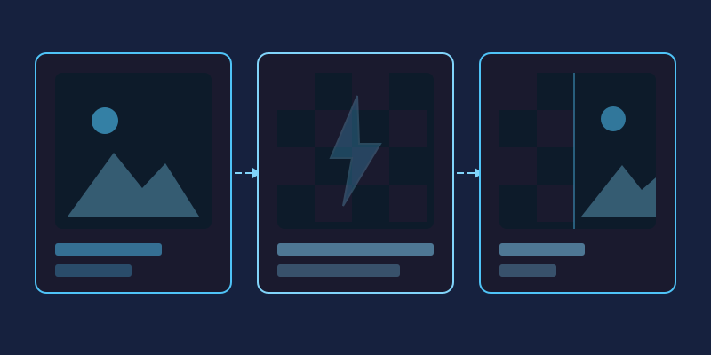

Images account for the majority of data downloaded by a typical web page, which means they are usually the number one reason a site feels slow. Visitors judge a page within seconds, search engines measure loading performance directly, and every unnecessary kilobyte works against you. The encouraging part: image optimization requires no coding skill, just a repeatable checklist you apply before uploading anything.
Step One: Resize Before You Compress
The most common mistake is uploading a 6000-pixel camera original into a layout that displays it at 800 pixels wide. Compression cannot rescue you here; the file is simply carrying millions of pixels nobody will ever see. Check the largest size your image actually renders at, then scale the file down to match before doing anything else. This single step routinely cuts file weight by 80 percent.
Choosing the Right Format
Each format has a job it does best:
- JPEG: the dependable all-rounder for photographs. Quality settings between 75 and 85 typically look identical to the original at a fraction of the size.
- PNG: use only when you need transparency or pixel-perfect graphics like logos and screenshots. It stores images losslessly, so photos saved as PNG are needlessly enormous.
- WebP: a modern format supported by every current browser, producing files roughly 25 to 35 percent smaller than equivalent JPEGs. If your platform supports it, this should be your default for photography.
- GIF: reserve it for simple looping animations only; for static images it is outdated.
Compression Without Visible Loss
Compression tools discard visual information your eyes barely register. The trick is finding the threshold where savings stop being free. Export at several quality levels and compare them side by side at actual display size. When you can no longer tell two versions apart, take the smaller one. Watch specifically for fuzzy text, banding in smooth skies, and blocky edges around high-contrast subjects; these appear first when compression goes too far.
Lazy Loading Explained
Lazy loading tells the browser to download images only when they approach the visible screen, rather than grabbing everything at once. Pages with many images below the fold benefit enormously: the visitor sees the top of the page almost instantly while lower content loads as they scroll. Modern browsers support this natively through a simple attribute on the image tag, and most website builders now offer it as a checkbox in their settings.
Serve Responsive Images
A phone screen does not need the same file as a 27-inch monitor. Responsive image techniques let you provide several sizes of the same picture and allow the browser to pick the appropriate one based on the device. Even if you do not write HTML yourself, many content platforms generate these variants automatically; make sure the option is enabled rather than fighting it.
Why This Matters for SEO
Search engines treat page speed as a ranking signal, and they measure it largely through user experience metrics that slow images directly damage. Fast pages also keep visitors around longer, reducing bounce rates, which feeds back into rankings. In short, optimized images help you twice: once technically and once behaviorally.
A Quick Pre-Publish Checklist
- Resize to actual display dimensions.
- Export as WebP where possible, JPEG otherwise.
- Compress to the smallest quality level you cannot distinguish.
- Confirm lazy loading is active on below-the-fold images.
- Test the live page on a mobile connection, not just your desktop.
JPG vs PNG vs WebP: Which Format When?
The format rules deserve a closer look, because choosing wrong costs speed before compression even begins. Keep this reference handy whenever you save:

| Format | Best for | Transparency | Typical savings |
|---|---|---|---|
| JPG | Photographs, gradients, complex scenes | No | Smallest practical choice for photos |
| PNG | Logos, icons, screenshots, sharp graphics | Yes | Larger files, lossless at full quality |
| WebP | Both photographs and flat graphics | Yes | Roughly 25–35% smaller than comparable JPG |
As a working rule, export photographs as WebP wherever your platform accepts it, reserve PNG for graphics that genuinely need transparency or pixel-perfect edges, and keep dependable JPG as the universal fallback. In miniPhotoShop you simply pick the format during export and watch the estimated file size react, so the decision stops being guesswork.
Lossy vs Lossless Compression in Plain English
Lossy compression permanently discards detail your eye is unlikely to miss, much like a friend summarizing a film instead of replaying it. Push too far and the summary starts losing plot: skies band, edges smudge, text fuzzes. Lossless compression instead repacks identical data more efficiently, like zipping a document; nothing degrades, yet photographs barely shrink because camera noise resists tidy packing.
This is why JPEG and WebP dominate photography, while PNG protects screenshots, diagrams and crisp text where even faint artifacts glare. The quality slider in the miniPhotoShop export panel exists precisely for this experiment: slide downward until artifacts surface, then step back one notch to safety.
Resize Before You Compress: The Biggest Win
Consider the arithmetic: a 4000-pixel-wide phone photo carries twelve million pixels, while an 800-pixel article column displays fewer than half a million. Ship the original untouched and over ninety percent of those bytes are dead weight no compressor can recover. Scaling first also makes every later step cheaper, because encoders finish faster and outputs land smaller.
Open the file in miniPhotoShop, type the width your layout truly renders at, and let the resampler do the work. Half a minute here routinely beats any optimization plugin installed afterwards.
Beyond the File Itself: Lazy Loading and Responsive Delivery
Two free browser features multiply everything above. Adding loading="lazy" to an image tag defers offscreen pictures until readers scroll near them, collapsing the initial download almost entirely on gallery-heavy pages. Responsive delivery goes further: supply several sizes of the same picture and the browser fetches whichever fits, so a phone on cellular data receives a fraction of the bytes a desktop monitor requests. Most modern publishing platforms generate those variants automatically once enabled, and hand-coded sites gain both behaviors with one extra attribute per image.
A 60-Second Image Optimization Checklist
Tape this beside your publish button:
- Measure the largest display size and resize to match it.
- Choose WebP for photos; PNG only when transparency is essential.
- Lower export quality until artifacts appear, then back off one notch.
- Never save photographs as PNG just to be safe.
- Switch on lazy loading for everything below the fold.
- Preview the finished page throttled to a slow connection.
- Revisit older hero images in miniPhotoShop whenever you redesign.
Frequently Asked Questions
Does switching to WebP hurt image quality?
Not at sane settings. WebP generally matches JPEG visually while producing noticeably smaller files, and the difference vanishes at higher quality levels. Inspect the exported copy at full size before uploading and you will know immediately.
What quality number should I pick when exporting?
There is no magic constant, though 75 to 85 suits most photographs. Trust your eyes over the digit: reduce the slider until flaws emerge, then return to the last clean stop.
Can existing PNG files be converted to WebP?
Yes, and transparency survives the trip. Screenshots and flat graphics can even use lossless WebP, which preserves every pixel while still trimming a surprising amount of weight.
How heavy should a page's images be overall?
Target roughly one megabyte of imagery for ordinary articles. Hero banners may run larger, yet a well-resized photograph seldom needs more than a couple hundred kilobytes.
Is special software required for any of this?
No. A free browser editor such as miniPhotoShop handles resizing, format conversion and quality-controlled exports, while lazy loading ships built into every current browser.
Run every future upload through this list and your pages will load dramatically faster without sacrificing a single pixel of visible quality.